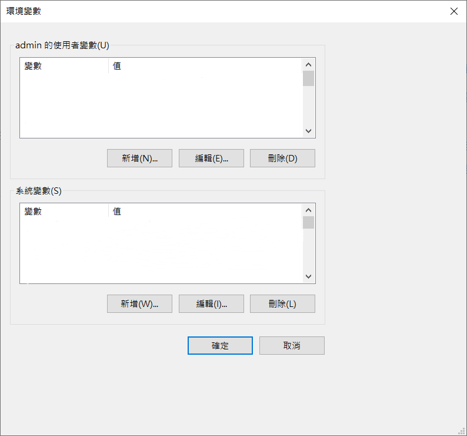

在Linux上設置環境變量
前言
環境變量主要分為兩種類型：系統環境變量（System-wide Environment Variables）和用戶環境變量（User-specific Environment Variables）。系統變量是系統級別的環境變量，對所有用戶和所有會話有效，用戶需要管理員權限才能更改它們；而用戶變量為特定用戶設置的環境變量，僅在該用戶的會話中有效，無需管理員權限即可修改，且不影響其他用戶的會話。
在可視化的Windows系統中，可通過設置進入環境變量設置頁面：

而在Linux系統中，設置環境變量相比會較為複雜，一般通過修改相關配置文件實現。
設置系統變量
系統變量的配置文件：/etc/environment
位於系統的
/etc目錄下，是全局配置文件，對所有用戶均有效。在Linux系統中，使用Gedit桌面文字編輯器打開文本（注意必須加上
sudo才可寫）：1
sudo gedit /etc/environment
如果沒有安裝Gedit，請使用Nano，這是一個基於終端的編輯器，不需要圖形界面：
1
sudo nano /etc/environment
打開文件後，請在文本底部添加新的系統變量，或刪除已有的系統變量，然後保存退出。
注意：
/etc/environment僅支持簡單的KEY=VALUE語法（中間沒有空格），其中KEY和VALUE分別是環境變量的名稱和值。設置完成後，登出並重新登入，然後在Shell中使用命令
1
echo $KEY
檢查設置是否成功。（如果沒有正確設置，將會輸出空行）
設置用戶變量
用戶變量的配置文件：~/.bashrc
位於用戶的家目錄下（
~表示家目錄），是針對單一用戶的個人配置文件，每個用戶都有自己獨立的.bashrc文件。Bash是Linux最常見的Shell。為了加載當前用戶的默認配置，Bash在每次啟動時都會加載
~/.bashrc中的內容，其中主要儲存終端配置和用戶變量。如果您使用的Shell不是Bash，請修改對應的配置文件（例如Z shell的配置文件為~/.zshrc）。同上，以Nano為例，輸入以下命令打開文本（無需添加
sudo）：1
nano ~/.zshrc
打開文件後，請在文本底部添加新的用戶變量，或刪除已有的用戶變量，然後保存退出。
注意：
~/.bashrc僅支持Bash語法。Bash語法中使用export命令設置環境變量。因此您加入文本的字段應是形如1
export KEY=VALUE
的樣式。
當然，您可以直接在Bash中輸入以上命令設置環境變量，但這種方式設置的環境變量僅對當前Bash有效。而如果將這行命令置於
~/.bashrc中，在用戶每次打開Bash時均會生效。設置完成後，您可以重啟終端使更改生效，也可以輸入命令
1
source ~/.bashrc
使更改立即生效，省去重啟的步驟。
同上，使用
echo命令檢查設置是否成功。